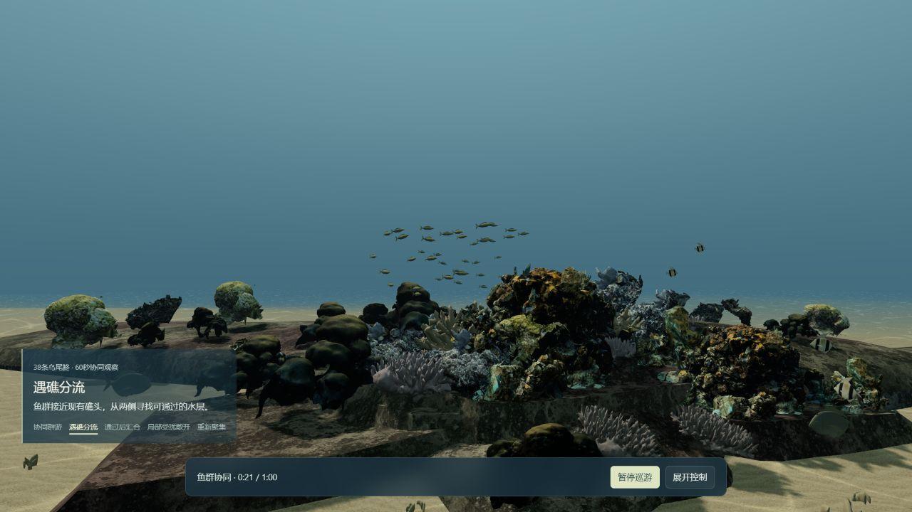
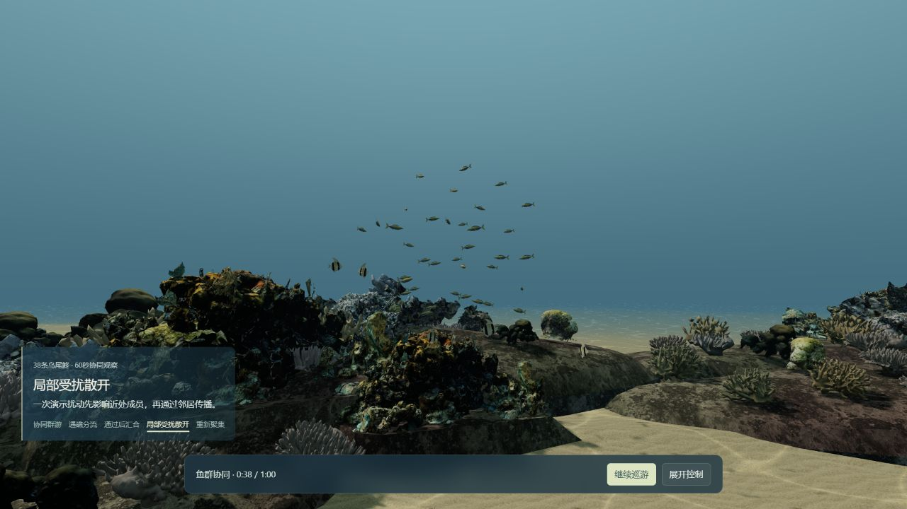
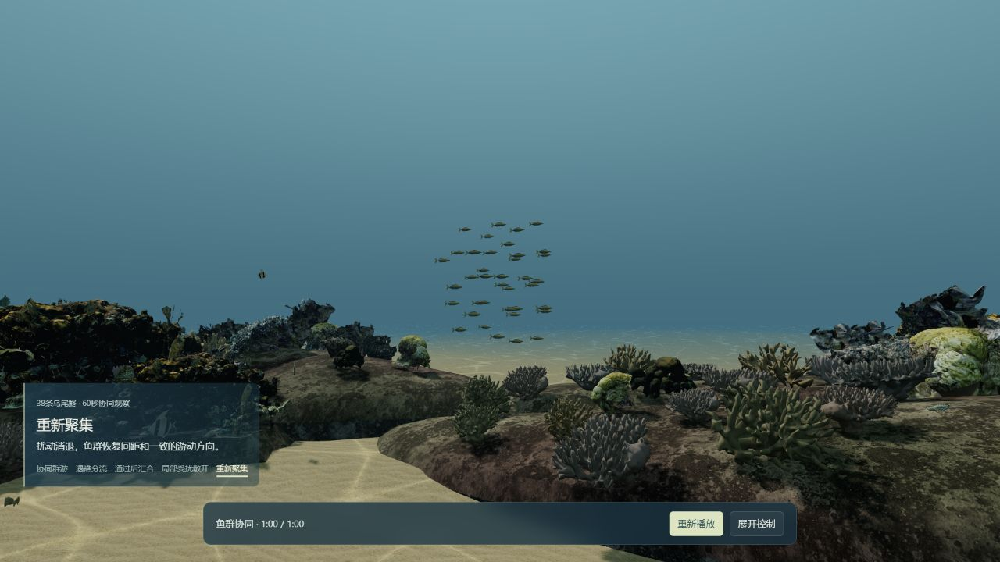

21秒 · 遇礁分流
同一38条鱼从礁头两侧通过。前礁会暂时遮挡一部分远侧成员。
38条现有乌尾鮗开始感知邻近同伴，沿现有礁体分流、汇合，经历一次局部扰动后恢复群聚。沿用原4分钟浅海路线，没有新增物种或替换素材。
先用1倍速完整观看。底部提示帮助辨认阶段；“展开控制”可暂停、变速或跳到各段，结束后可接管探索。4分钟入口前60秒包含同一演示，随后平滑交回礁谷、沙道和草床巡游；原六段中文讲解仍可开启。

同一38条鱼从礁头两侧通过。前礁会暂时遮挡一部分远侧成员。

绕礁后逐渐重新靠近；没有换模型或瞬间换位置。

成员朝向分散、间距扩大。扰动是一次展示事件，响应由邻居关系计算。

警报消退，群体重新形成较一致的间距和方向。
截图来自最终浏览器画面。21秒与60秒来自完整连续播放；34秒、38秒为完整播放后的暂停定位观察。图片辅助对照，完整播放记录另行保留。
169项相关检查通过。原路线961个位置和其余255个动物运动保持，鱼群跳播最多重算0.2秒。实测均为本机桌面浏览器，正常缓存未清；本地准备时间分别 9.34 / 5.12 秒，不代表公网冷启动或手机性能。
邻居协调、绕礁和受扰恢复已形成可观察的变化。宏观目的地与扰动时刻仍由演示安排；地形和同类身体约束采用经过采样核对的近似。远侧分支会被礁体局部遮挡，旧资产模型感和礁体硬边仍保留。协同回放有限到240秒，超出后该群保持末帧；尚不是持续生态、捕食或全场景自主避碰。